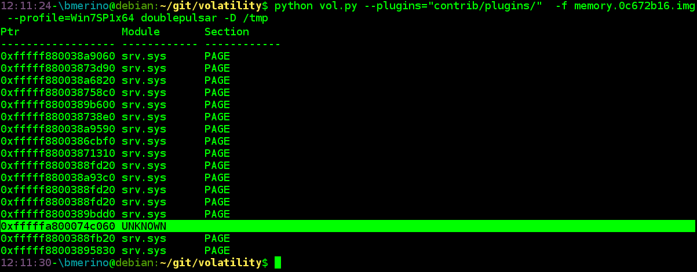
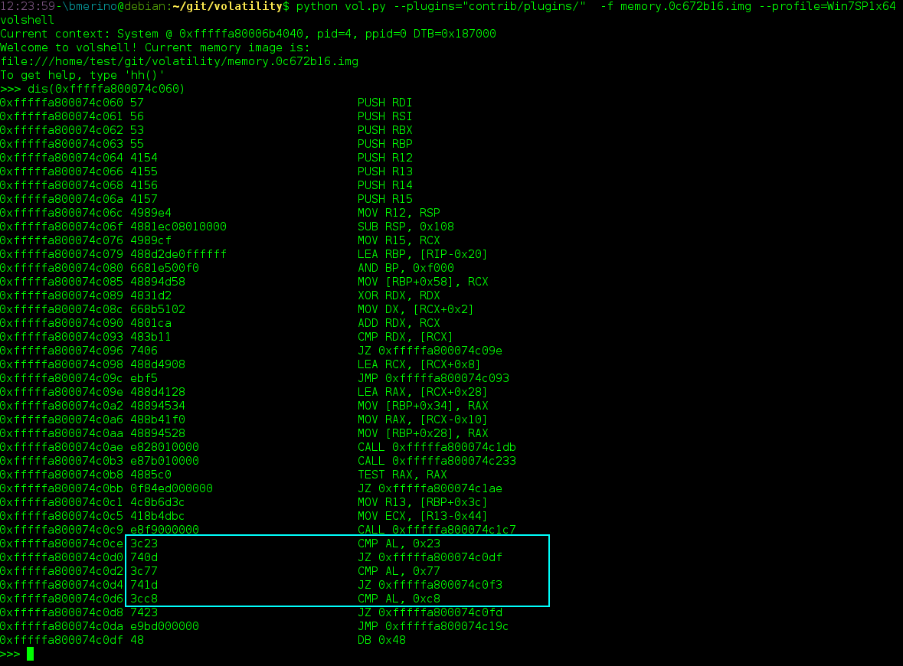
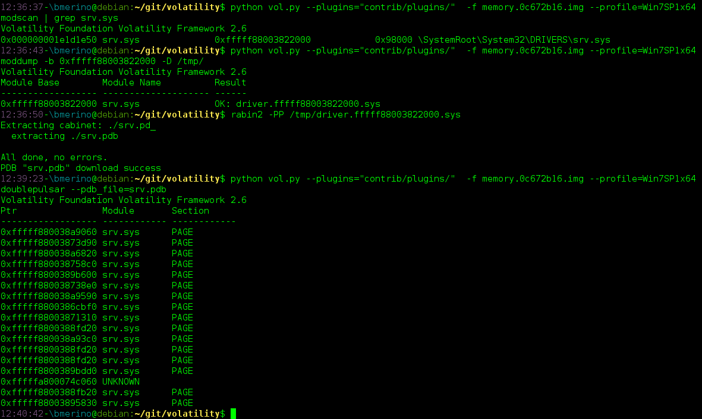
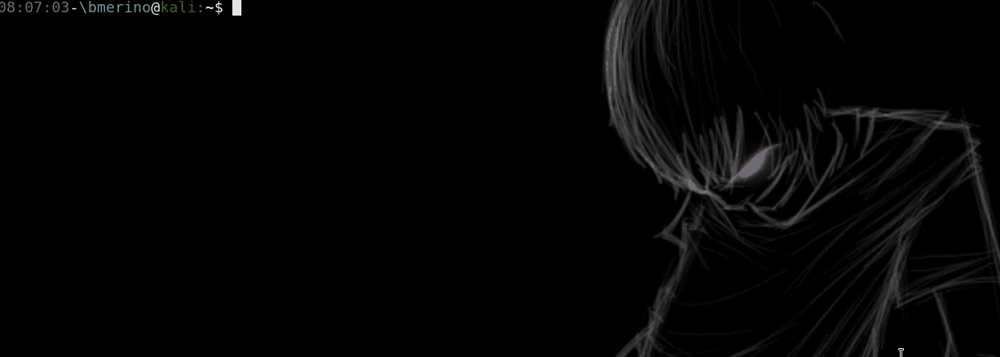

使用Volatility检测DoublePulsar SMB 和日志审查
- 作者:c4bbage
- 时间:2017.8.15
-
链接:http://dobest1.com/doublepulsar-smb-implant-detection-from-and-eventlog-detection/
http://www.shelliscoming.com/2017/08/doublepulsar-smb-implant-detection-from.html
近期公司windows（阿里云）有被日掉，怀疑是永恒之蓝作祟，随之收集资料学习。
在过去的几个月里，有各种各样的攻击者以及使用FuzzBunch框架攻击系统的script kiddies。
在最近的一次事件中，我正在分析一个内存转储，我花了一些时间来确定感染载体是EternalBlue。一旦我发现ring0 shellcode（与DoublePulsar相关），我能更容易的分析出来。 为了以后能快速的分析，我开发了一个虚拟插件，以便于找到这种入侵的痕迹。
该插件不是基于Yara规则。它只是从srv.sys驱动程序中转储SrvTransaction2DispatchTable 函数数组，并检查它们指向de 二进制地址空间（请查看好的Zerosum0x0分析）。要注意的是，虽然插件转储整个表，但实际上只需要验证SrvTransactionNotImplemented符号指向的正确位置。
这个插件通过从调试目录获取到的.pdb 路径，并从http://msdl.microsoft.com/download/symbols（或您提供的服务器与SYMBOLS选项）下载它，来解析 SrvTransaction2DispatchTable。一旦获得符号偏移量，它只会转储指针数组。如果SrvTransactionNotImplemented（条目14）指向"unknown"位置，那么您可能正在处理DoublePulsar事件。这样的话，volshell和dis()会清除任何疑问。
让我们看一个例子。以下图像是已被EternalBlue + DoublePulsar攻击的Windows 7 SP1 x64主机：
 通过检查"unknown"位置的代码，我们可以验证我们正在处理DoublePulsar。注意操作码0x23（ping），0xc8（exec），0x77（kill）。
 在以前的情况下，符号文件已从Microsoft下载。如果您的主机没有Internet连接，您可以通过PDB_FILE选项提供pdb文件。我通常使用Radare来获得这个。
 要运行插件，请确保具有以下依赖关系： construct: pip install construct==2.5.5-reupload pdbparse: pip install pdbparse pefile: pip install pefile requests: pip install requests * cabextract: apt-get install cabextract
动图展示:  插件地址: * BorjaMerino/DoublePulsar-Volatility
日志审查
还可以使用EventLog进行审核，在日志中搜素"0x00000050 (0xfffffa800d189000"
#https://twitter.com/GossiTheDog/status/856986283721326592